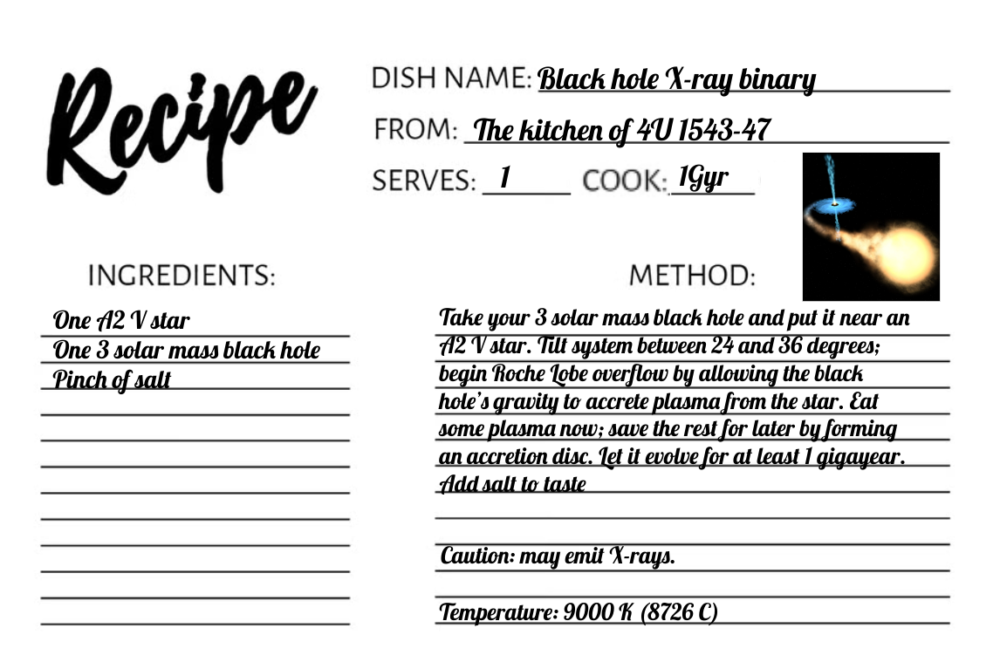

Outreach
One of my main focuses in outreach is to make it as hands-on and accessible as possible. My parrot, Rufus (pictured above), makes frequent guest appearances in my talks and outreach events and enjoys being the star of the show.
Social Media
In addition to leading events and giving public talks, I contribute to the McGill Space Institute's twitter and Instagram. See below for a twitter thread about our neutron star X-ray binary project MOOSE.Twitter takeover :thread:by SMC X-1, a neutron star X-ray binary in the Small Magellanic Cloud, doing the unexpected (courtesy of one of our MSI postdocs!) #SMCX1takeover 1/ pic.twitter.com/muHJCPDyJx
— McGill Space Institute (@McGillMSI) October 7, 2022
X-ray Binaries as Recipe Cards
